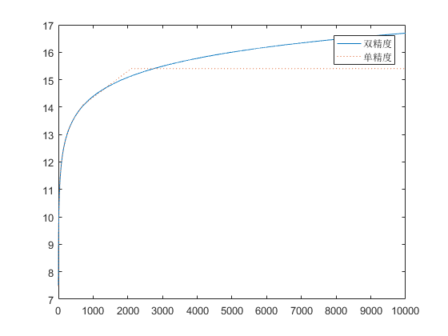

n = 1:1e7;
harmonic = 1./n;
partial_sum = cumsum(harmonic);
m = 1000:1000:1e7;
partial_sums_selected = partial_sum(m);
plot(partial_sums_selected);
n = single(1:1e7);
harmonic = 1./n;
partial_sum = cumsum(harmonic);
m = 1000:1000:1e7;
partial_sums_selected = partial_sum(m);
hold on
plot(partial_sums_selected,':');
legend('双精度','单精度')
x = char('8','5');
l=length(x);
h = [double('8');double('5')];
y = num2str(h);
table = [y x];
fprintf('该数组有%d个元素\n',l)
fprintf('%c%c表示字符%c\n',table')
A = [1 2;3 4];
B = [10 20;30 40];
C = [3 6;9 12];
ABC(:,:,1) = A;
ABC(:,:,2) = B;
ABC(:,:,3) = C;
disp('ABC = ')
disp(ABC)
Column_A1B1C1 = [A(:,1),B(:,1),C(:,1)];
disp('Column_A1B1C1 = ')
disp(Column_A1B1C1)
Row_A2B2C2 = [A(2,:);B(2,:);C(2,:)];
disp('Row_A2B2C2')
disp(Row_A2B2C2)
number = ABC(1,2,3);
fprintf('第1行、第2列、第3页的数值是%d。 \n',number)
thermocouple = [84.3 90.0 86.7
86.4 89.5 87.6
85.2 88.6 88.3
87.1 88.9 85.3
83.5 88.9 80.3
84.8 90.4 82.4
85.0 89.3 83.4
85.3 89.5 85.4
85.3 88.9 86.3
85.2 89.1 85.3
82.3 89.5 89.0
84.7 89.4 87.3
83.6 89.8 87.2];
[rows,cols] = size(thermocouple);
for k = 1:cols
file_name = ['thermocou-ple',num2str(k)]
date = thermocouple(:,k)
save(file_name,'date')
end
A = ['aluminum'];
B = ['copper'];
C = ['iron'];
D = ['molybdenum'];
E = ['cobalt'];
my_cellarray = {A,B,C,D,E};
celldisp(my_cellarray)
该数组有2个元素
56表示字符8
53表示字符5
ABC =
(:,:,1) =
1 2
3 4
(:,:,2) =
10 20
30 40
(:,:,3) =
3 6
9 12
Column_A1B1C1 =
1 10 3
3 30 9
Row_A2B2C2
3 4
30 40
9 12
第1行、第2列、第3页的数值是6。
file_name =
thermocou-ple1
date =
84.3000
86.4000
85.2000
87.1000
83.5000
84.8000
85.0000
85.3000
85.3000
85.2000
82.3000
84.7000
83.6000
file_name =
thermocou-ple2
date =
90.0000
89.5000
88.6000
88.9000
88.9000
90.4000
89.3000
89.5000
88.9000
89.1000
89.5000
89.4000
89.8000
file_name =
thermocou-ple3
date =
86.7000
87.6000
88.3000
85.3000
80.3000
82.4000
83.4000
85.4000
86.3000
85.3000
89.0000
87.3000
87.2000
my_cellarray{1} =
aluminum
my_cellarray{2} =
copper
my_cellarray{3} =
iron
my_cellarray{4} =
molybdenum
my_cellarray{5} =
cobalt
